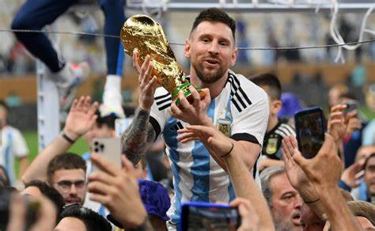

Lionel Andrés Messi Cuccittini
Futbolista Profesional
- Contacto
- Fecha de Nacimiento: 24 de junio de 1987
- Nacionalidad: Argentina
- Resumen
- Reconocido por muchos como el mejor futbolista y uno de los mejores deportistas de todos los tiempos, ha ganado 44 títulos colectivos y más de 50 títulos individuales en su carrera. Es el jugador con más "Balones de Oro" y uno de los pocos en ganar una medalla de oro en los juegos olímpicos y un Mundial.
- Estadistica
- FC Barcelona | 778 partidos jugados | 672 goles | 303 asistencias
- Paris Saint-Germain | 75 partidos jugados | 32 goles | 35 asistencias
- Inter Miami | 7 partidos jugados | 10 goles | 1 asistencia
- Selección Argentina | 175 partidos jugados | 103 goles | 56 asistencias
- Habilidades
- Fuerza y resistencia fisica
- Habilidad en el regate
- Tiro preciso
- Liderazgo en el campo